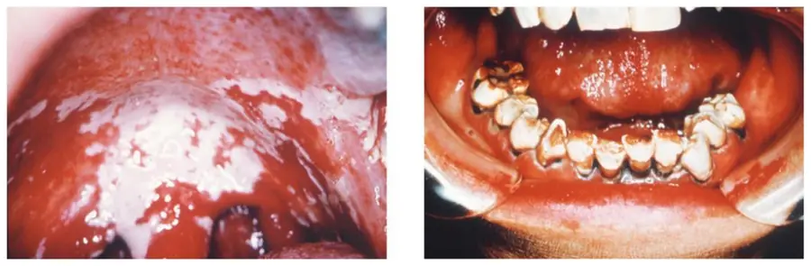
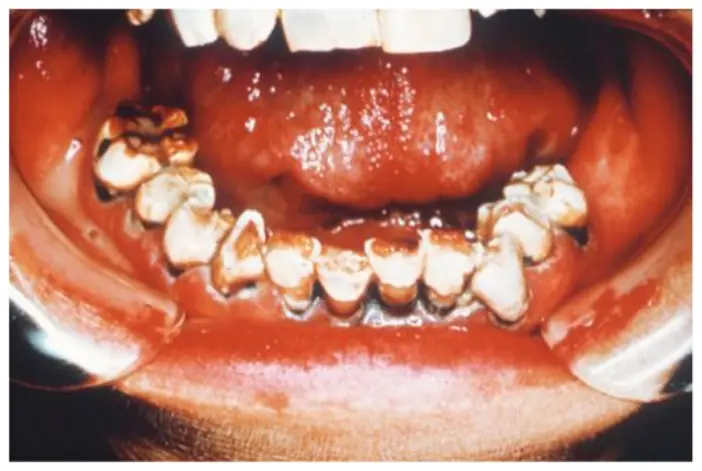

نسخه استخراجشده؛ ترجمه یا تأیید علمی انجام نشده است. وضعیت: captured
پرتودرمانی سر و گردن در دوزهای روزانهی کوچک — یعنی فرکشن — داده میشود. و این تقسیمبندی سه سود مجزا دارد:

و اعداد پروتکل معمول: «بهطور معمول ۲ گری روزانه داده میشود، که پرتوگیری هفتگی ۱۰ گری میشود. دورهی پرتودرمانی ۶ تا ۷ هفته ادامه مییابد تا مجموع ۶۰ تا ۷۰ گری تجویز شود.»
و یک پیشرفت فنی: «در سالهای اخیر تکنیکهای سهبعدی تازهای به نام پرتودرمانی با شدت تعدیلشده (IMRT) برای کنترل توزیع دوز با دقت بالا به کار رفتهاند و پرتوگیری بافتهای طبیعی مجاور را کمینه میکنند.»
چرا مخاط زودتر از همه واکنش نشان میدهد؟ «مخاط دهان یک لایهی بازال دارد که از سلولهای پیشساز با تقسیم سریع و پرتوحساس ساخته شده است.»
و سیر زمانیاش دقیق است: «تا پایان هفتهی دوم درمان، مرگ سلولی یک پاسخ التهابی برمیانگیزد و غشاهای مخاطی نواحی قرمزی و التهاب نشان میدهند — یعنی موکوزیت. در طول درمان، غشای مخاطی پرتوگیر از بافت همبند زیرین جدا میشود و یک شبهغشای سفید تا زرد میسازد — همان لایهی اپیتلیال دِسکوامهشده.»
و اوجش کجاست؟ «در پایان درمان، موکوزیت معمولاً شدیدترین است، ناراحتی در بیشینه، و دریافت غذا دشوار.» و مدیریتش: «بهداشت دهانی خوب عفونت را کمینه میکند. بیحسکنندههای موضعی ممکن است هنگام غذا لازم شوند. و عفونت ثانویهی مخمری با کاندیدا آلبیکنس یک عارضهی شایع است و ممکن است نیاز به درمان داشته باشد.»
و پس از پایان درمان چه میشود؟ «مخاط بهسرعت ترمیم میشود؛ ترمیم معمولاً تا حدود دو ماه کامل است. ولی فیبروز بافت همبند زیرین باعث میشود مخاط آتروفیک، نازک و نسبتاً بدون عروق شود.» و پیامد عملیاش: «این تغییرات آتروفیک دنچر گذاشتن را پیچیده میکنند چون ممکن است زخمهای دهانی در بافت بهخطرافتاده بسازند.»
و یک هشدار تشخیصی مهم: «زخمها ممکن است از نکروز پرتویی یا عود تومور هم ناشی شوند. بیوپسی ممکن است برای افتراق لازم باشد.»
«جوانههای چشایی به پرتو حساساند.» و عددش تکاندهنده است: «دوزهای محدودهی درمانی باعث از دست رفتن تیزی چشایی در هفتهی دوم یا سوم پرتودرمانی میشوند، و تیزی چشایی معمولاً در دورهی درمان با ضریب ۱۰۰۰ تا ۱۰٬۰۰۰ کاهش مییابد.»
و یک الگوی آناتومیک ظریف: «طعمهای تلخ و ترش وقتی دوسوم خلفی زبان پرتوگیر میشود شدیدتر آسیب میبینند، و طعمهای شور و شیرین وقتی یکسوم قدامی زبان پرتوگیر میشود بیشتر آسیب میبینند.»
و خبر خوب: «از دست رفتن چشایی برگشتپذیر است و بازیابی ۲ تا ۴ ماه طول میکشد.» ولی در این فاصله: «از دست رفتن چشایی با موکوزیت ترکیب میشود و با دلسرد کردن از خوردن، تغذیه را بهشکل نامطلوبی تحت تأثیر قرار میدهد.»
و یک استثنای مهم بر قاعدهی پرتوحساسی: «غدد بزاقی بهشدت به پرتو حساساند، با وجود سلولهای سازندهی نسبتاً تمایزیافتهشان.»

و سقفهای دوز که پروتکلهای درمانی میکوشند رعایت کنند: «حدود ۲۵ گری برای پاروتید تا عملکرد بزاقی پس از درمان بازیابی شود؛ و این حد دوز ۳۹ گری برای غدد سابمندیبولار است، که از پاروتید پرتومقاومترند.»
و سیر افت جریان بزاق: «در هفتهی نخست پرتودرمانی، بیماران کاهش تقریباً ۵۰ درصدی جریان بزاق را تجربه میکنند. جریان بزاق بهتدریج ظرف یک سال به کمتر از ۱۰ درصد کاهش مییابد.» و تغییرات دیررس غده: «فیبروز و کاهش عروق، که بر بازیابی عملکرد اثر میگذارد.»
و عملکرد باقیمانده وابسته به دوز است — با دو نقطهی عددی: «در دوزهای کمتر از ۴۵ گری، تنها ۵ درصد بیماران از دست رفتن دائمی عملکرد را تجربه میکنند، که در پنج سال پس از درمان سنجیده شده است. در دوزهای ۶۰ گری و بیشتر، این کسر به ۵۰ درصد افزایش مییابد.» و IMRT «به حفظ غدد بزاقی سمت مقابل کمک کرده است».
و بزاق باقیمانده فقط کمتر نیست، متفاوت است: «ویژگیهای زیستشیمیایی بزاق تولیدشده متفاوت است — بزاق pH پایینتری دارد، بهطور میانگین ۵٫۵ در بیماران پرتوگیر در برابر ۶٫۵ در افراد پرتوندیده.»
و چرا این عدد حیاتی است؟ «این pH بهاندازهی کافی پایین است که دِکلسیفیکاسیون مینای طبیعی را آغاز کند. و ظرفیت بافری بزاق نیز کاهش مییابد.»
تعریفش: «یک شکل مهارگسیخته از پوسیدگی دندانی که ممکن است در بیماران با خشکی دهان پرتویی رخ دهد.» و علتش زنجیرهای از تغییرات بزاق است: «جریان کاهشیافته، pH کاهشیافته، ظرفیت بافری کاهشیافته، گرانروی افزایشیافته، و فلور تغییریافته.»
و تغییر میکروبی مشخص: «بیماران پرتودرمانی ساختارهای دهانی، افزایش استرپتوکوکوس موتانس، لاکتوباسیلوس، و کاندیدا دارند.» و یک نکتهی شیمیایی: «بزاق باقیمانده غلظت پایینی از یون کلسیم دارد؛ این به انحلالپذیری بیشتر ساختار دندان و رمینرالیزاسیون کمتر میانجامد.» و افزون بر آن: «بهدلیل عمل پاکسازی کاهشیافته یا غایب بزاق طبیعی، دبری بهسرعت انباشته میشود.»
و سه الگوی بالینی پوسیدگی پرتویی:
و چه چیزی آن را از پوسیدگی معمول جدا میکند؟ «محل، سیر سریع، و حملهی گسترده، پوسیدگی پرتویی را متمایز میکنند.» و یک یافتهی افزوده: «شواهدی هست که پوسیدگی پرتویی محتملتر است به ضایعات التهابی پریاپیکال بینجامد اگر استخوان پریاپیکال دوز بالایی گرفته باشد.»
و بهترین پیشگیری، با جزئیات دقیق: «کاربرد روزانهی ژل فلوراید سدیم خنثی یک درصدِ چسبنده در تریهای اپلیکاتور سفارشی.» و باید ترکیب شود با «اقدامات ترمیمی لازم، بهداشت دهانی عالی، و رژیم محدود در غذاهای پوسیدگیزا». و چرا همکاری بیمار حیاتی است؟ «چون پوسیدگی پرتویی یک تهدید مادامالعمر است.»
«اثر پرتودرمانی بر دندانها به مرحلهی تکامل دندان بستگی دارد.»
ولی یک استثنای جالب: «سازوکار رویش دندان نسبتاً پرتومقاوم است. دندانهای پرتوگیر با تشکیل ریشهی تغییریافته بهطور معمول رویش مییابند، حتی اگر بیریشه باشند.»
و در کودکان: «کودکانی که پرتودرمانی فکها میگیرند ممکن است نقصهایی در دندان دائمی نشان دهند، مانند تکامل ریشهی عقبافتاده، دندانهای کوتوله، یا شکست در تشکیل یک یا چند دندان.» و قاعدهی کلی: «شدت آسیب وابسته به دوز است.»
آسیب اصلی استخوان عروقی است: پرتو به عروق پریوستئوم و استخوان کورتیکال آسیب میزند. تعریف رسمی استئورادیونکروز (ORN): ناحیهای از استخوان پرتوگیرِ در معرض که در سه ماه ترمیم نمییابد، بدون تومور باقیمانده یا عودکننده، و پس از کنار گذاشتن علل دیگر استئونکروز. مدل پذیرفتهشده: تغییرات میکروواسکولار حالتی از هیپوکسی، هیپوواسکولاریتی و هیپوسلولاریتی میسازند و به زخمی مزمن و ترمیمنیافتنی میانجامند.
ORN معمولاً ۶ تا ۱۲ ماه پس از درمان پیدا میشود، ولی از ماهها تا سالها بعد هم ممکن است. بروزش حدود ۵ تا ۷ درصد است، در پرتودرمانی معمول، IMRT و براکیتراپی یکسان. در مندیبل شایعتر از ماگزیلاست، احتمالاً بهدلیل خونرسانی کمتر.
زیر ۵۰ گری نادر است، ولی وقتی دوز استخوان از ۶۶ گری بگذرد خطرش یازده برابر میشود. دندان پوسیده، بیماری پریودنتال، ترومای کشیدن دندان و دنچر نامناسب عوامل خطر مهماند. پهن شدن فضای PDL در مندیبل پرتوگیر یافتهی شایعی است و اگر استخوان مجاور سالم باشد نیاز به مدیریت ندارد.
مراقبت پیش و پس از درمان: دندانهای پوسیده پیش از پرتودرمانی ترمیم میشوند؛ دندانهای با پوسیدگی گسترده یا پشتیبانی پریودنتال ضعیف کشیده میشوند و ۲ تا ۳ هفته برای ترمیم زخم پیش از آغاز پرتودرمانی فرصت داده میشود. پس از درمان، معاینه و رادیوگرافی دورهای پوسیدگی و التهاب پریاپیکال را زود نشان میدهد؛ دوز این رادیوگرافیها در برابر دوز درمانی ناچیز است و نباید مانع رادیوگرافی اندیکاسیوندار شود.
عضلات جونده: التهاب و فیبروز ماستر و پتریگوییدها به تریسموس میانجامد؛ محدودیت باز کردن دهان حدود دو ماه پس از پایان پرتودرمانی آغاز میشود و پیش میرود، و تمرین باز کردن دهان کمک میکند.